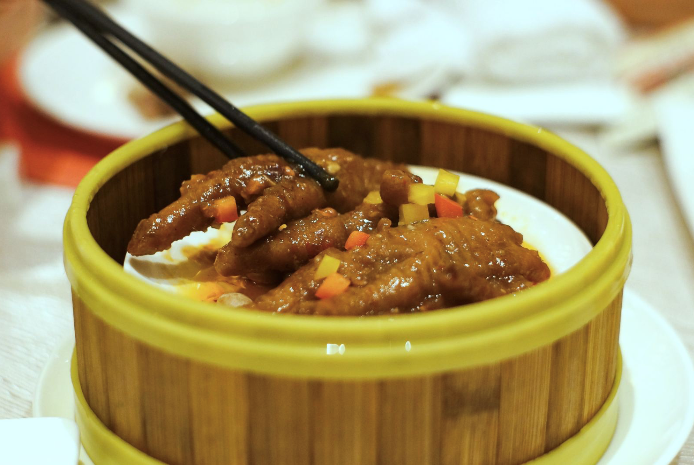

凤爪又称鸡掌，鸡爪，爪钱风暴，凤足等。是一道经典的传统小吃，在川菜，粤菜中均有制作，多皮、筋，胶质丰富。
在南方，凤爪可是一道上档次的名菜，其烹饪方法也较复杂。它富含谷氨酸，胶原蛋白和钙质，多吃不但能软化血管，同时具有美容功效。
鸡爪色泽绛红，皮层胀大而有皱纹，故有皱纹凤爪之称。皮下饱含芡汁，有灌汤之感。食时，皮骨易离，皮软滑，骨酥烂，老少咸宜。
煮: 将鸡脚用水煮至将熟，煮的水要酌加醋和饴糖。
炸: 炸至熟透色红即可。炸后要漂水，去油腻，使皮骨分而不离，皮层收缩起皱纹，入口即化。
蒸: 蒸时加酱料芡汁，蒸至软烂即可。加何种酱料，可随地方风味，还可随时令而有不同。目前，广东多用蚝油、桂林酱、柱侯酱、OK汁等，但没有一个店是相同的。